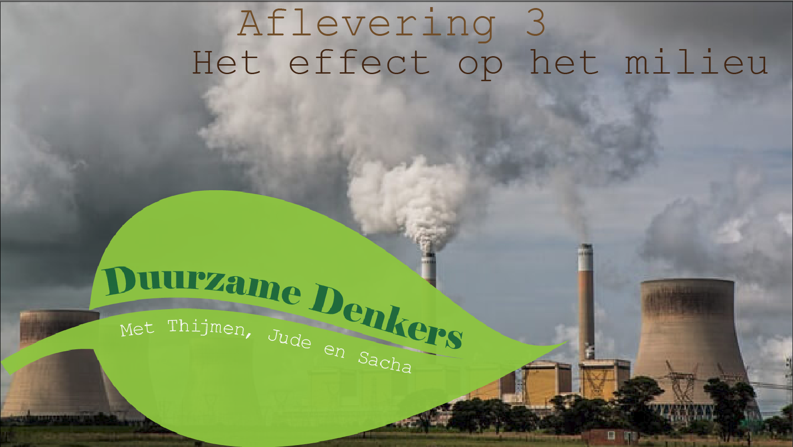

Afleveringen
-
Aflevering 1 - Fast Fashion
Fast fashion is een belangrijk onderwerp voor een duurzame wereld. Ons doel is om jullie bewust te maken over de gevolgen van fast fashion.
-
Aflevering 2 - Kinderen in de kledingindustrie
Kinderen in de kledingindustrie werken vaak onder slechte en gevaarlijke omstandigheden. Wij vertellen meer over hoe je dit kan tegengaan.
-

Aflevering 3 - Het effect op het milieu
De grootste reden waarom mensen duurzaam beginnen te leven is voor het milieu. Het milieu is valt nu nog mee, zolang we maar niet zo blijven doorgaan.
-
Aflevering 4 - De productieketen
In de productieketen is het proces waar het meest vuil wordt afgestoten, waardoor mensen meer duurzamer willen leven. We vertellen hoe slecht sommige productieketens zijn voor de toekomst.
-
Aflevering 5 - Tweedehands kleding
Tweedehands kleding is een van de beste manieren om beter duurzamer te leven. Hier vind je de beste tips en tricks voor het kopen en verzorgen van tweedehands kleding.
-
Aflevering 6 - Recyclen en upcyclen
In deze aflevering geven we handige tips over het recyclen en/of het upcyclen van je kleding. We leggen uit waarom recyclen en upcylen de planeet helpt.